Bases SVG → referencias de estilo (17 imágenes)
01_calle_oleo_antiguo.png
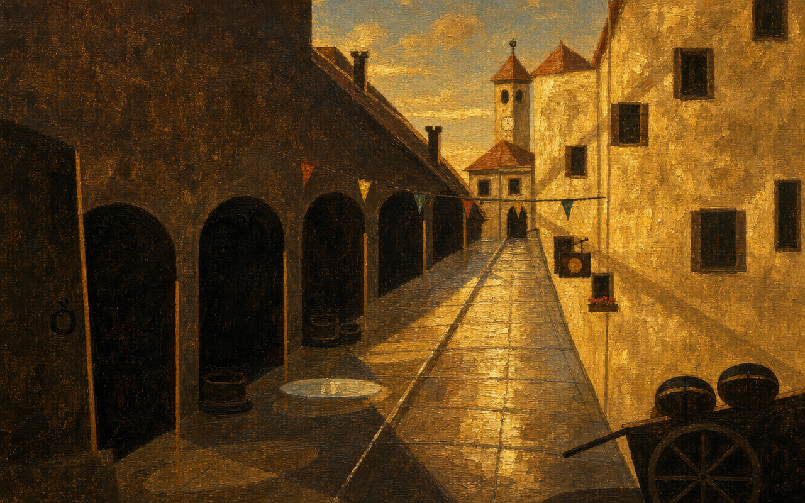
high · 123.0s
Fully repaint this exact scene as a finished illustration. Keep the composition, camera angle, perspective, the layout and silhouette of every element, and the lighting direction EXACTLY as in the reference image. Ground-level view. Fill the entire frame edge to edge: no borders, no frames, no letterboxing, no vignettes. No people, no animals with human poses, no text, no watermark. Art style: antique oil painting by a 17th-century European old master — visible loaded brushstrokes, glazed warm layers, deep chiaroscuro golden-hour light, muted earth pigments with a luminous amber varnish glow, classical townscape painting.
02_plaza_comic_europeo.png
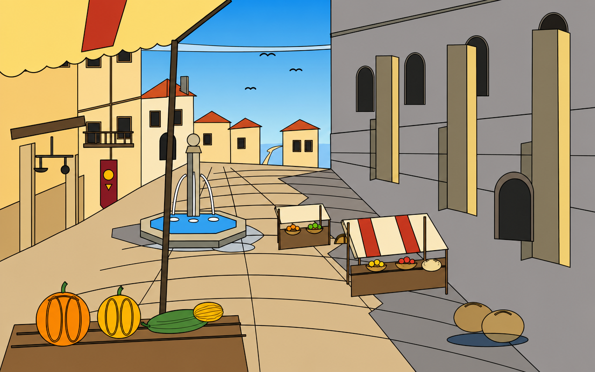
high · 114.5s
Fully repaint this exact scene as a finished illustration. Keep the composition, camera angle, perspective, the layout and silhouette of every element, and the lighting direction EXACTLY as in the reference image. Ground-level view. Fill the entire frame edge to edge: no borders, no frames, no letterboxing, no vignettes. No people, no animals with human poses, no text, no watermark. Art style: classic European comic album background (bande dessinée), ligne claire — crisp uniform dark ink outlines, flat vivid colors with minimal shading, clean geometric shapes, in the tradition of Tintin and Asterix village scenes.
03_taberna_maniac_mansion.png
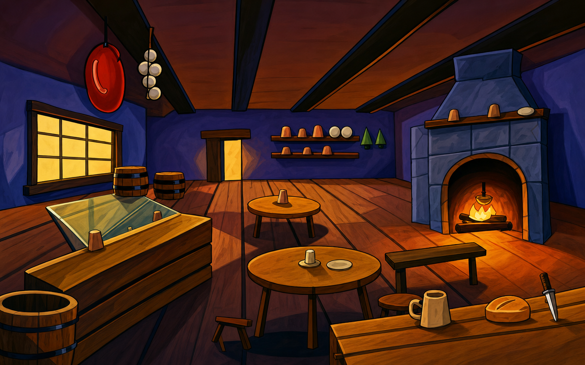
high · 108.5s
Fully repaint this exact scene as a finished illustration. Keep the composition, camera angle, perspective, the layout and silhouette of every element, and the lighting direction EXACTLY as in the reference image. Ground-level view. Fill the entire frame edge to edge: no borders, no frames, no letterboxing, no vignettes. No people, no animals with human poses, no text, no watermark. Art style: 1990s LucasArts point-and-click adventure background in the vein of Maniac Mansion: Day of the Tentacle — zany cartoon look, slightly wobbly exaggerated shapes, bold dark outlines, saturated theatrical colors, hand-painted cartoon interior.
04_bosque_ghibli.png
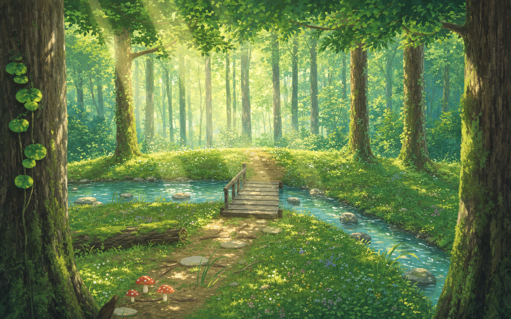
high · 147.8s
Fully repaint this exact scene as a finished illustration. Keep the composition, camera angle, perspective, the layout and silhouette of every element, and the lighting direction EXACTLY as in the reference image. Ground-level view. Fill the entire frame edge to edge: no borders, no frames, no letterboxing, no vignettes. No people, no animals with human poses, no text, no watermark. Art style: Studio Ghibli background painting — soft gouache brushwork, lush layered greens, luminous atmospheric light with gentle bloom, tender hand-painted anime scenery full of quiet detail.
05_puerto_videojuego_clasico.png
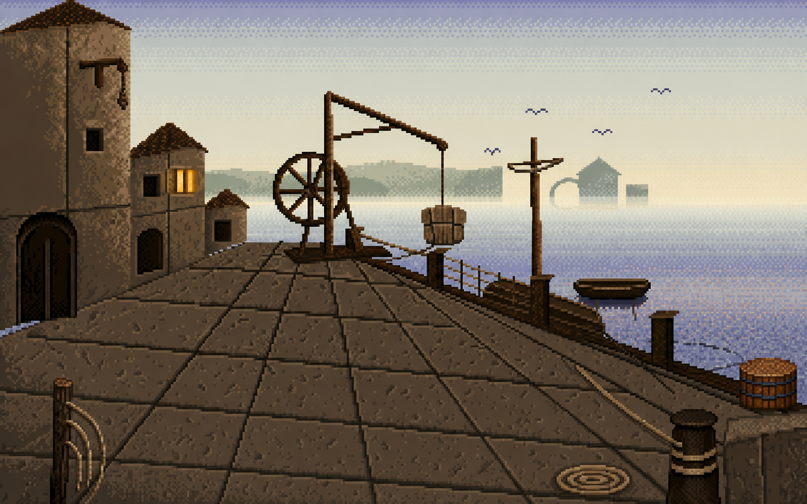
high · 111.5s
Fully repaint this exact scene as a finished illustration. Keep the composition, camera angle, perspective, the layout and silhouette of every element, and the lighting direction EXACTLY as in the reference image. Ground-level view. Fill the entire frame edge to edge: no borders, no frames, no letterboxing, no vignettes. No people, no animals with human poses, no text, no watermark. Art style: classic 1990s video game pixel art background — 16-bit VGA adventure-game scene, limited 32-color palette, careful dithering for the fog and water gradients, crisp readable pixel clusters, no anti-aliasing look.
06_puerta_fantasia_oscura_80s.png
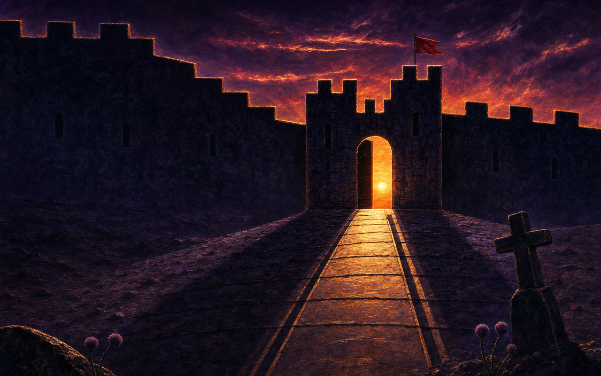
high · 123.8s
Fully repaint this exact scene as a finished illustration. Keep the composition, camera angle, perspective, the layout and silhouette of every element, and the lighting direction EXACTLY as in the reference image. Ground-level view. Fill the entire frame edge to edge: no borders, no frames, no letterboxing, no vignettes. No people, no animals with human poses, no text, no watermark. Art style: 1980s dark fantasy illustration — moody airbrushed painting like a vintage heavy-metal album cover or an 80s sword-and-sorcery paperback, ominous glow, deep purple-black shadows, dramatic rim-lit silhouettes, epic and menacing.
base
01_calle_miniatura_medieval.png
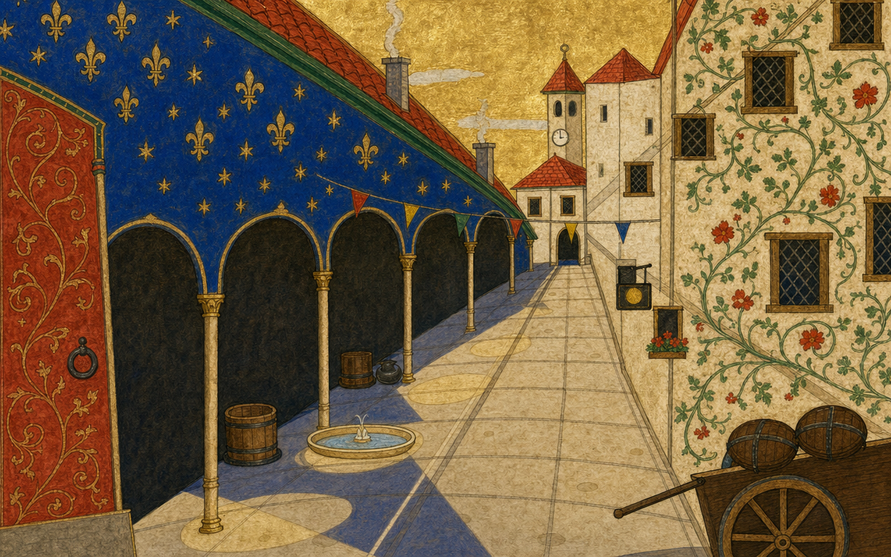
high · 122.3s
Fully repaint this exact scene as a finished illustration. Keep the composition, camera angle, perspective, the layout and silhouette of every element, and the lighting direction EXACTLY as in the reference image. Ground-level view. Fill the entire frame edge to edge: no borders, no frames, no letterboxing, no vignettes. No people, no animals with human poses, no text, no watermark. Art style: medieval illuminated manuscript miniature — flat bright mineral pigments (vermilion, lapis blue, malachite green), fine dark pen outlines, patterned surfaces, subtle gold leaf accents in the sky, parchment texture, naive charming detail like a 15th-century book of hours city scene.
base
02_plaza_acuarela.png
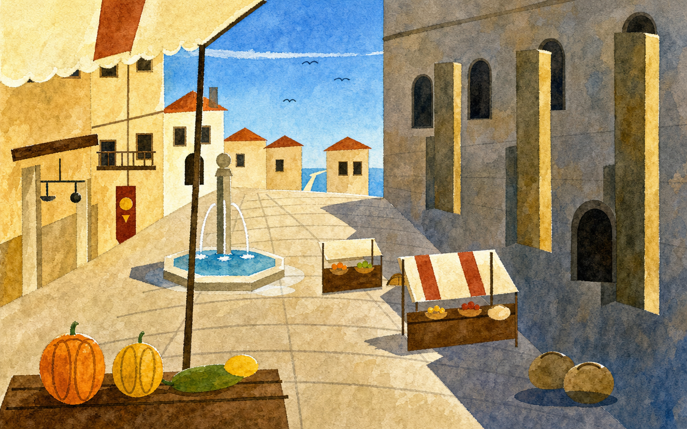
high · 105.0s
Fully repaint this exact scene as a finished illustration. Keep the composition, camera angle, perspective, the layout and silhouette of every element, and the lighting direction EXACTLY as in the reference image. Ground-level view. Fill the entire frame edge to edge: no borders, no frames, no letterboxing, no vignettes. No people, no animals with human poses, no text, no watermark. Art style: crisp defined watercolor painting — transparent luminous washes with deliberate hard edges, white paper reserved for highlights, granulating pigment texture in the shadows, confident wet-on-dry brushwork, controlled architectural watercolor with clean silhouettes.
base
03_taberna_caravaggio.png
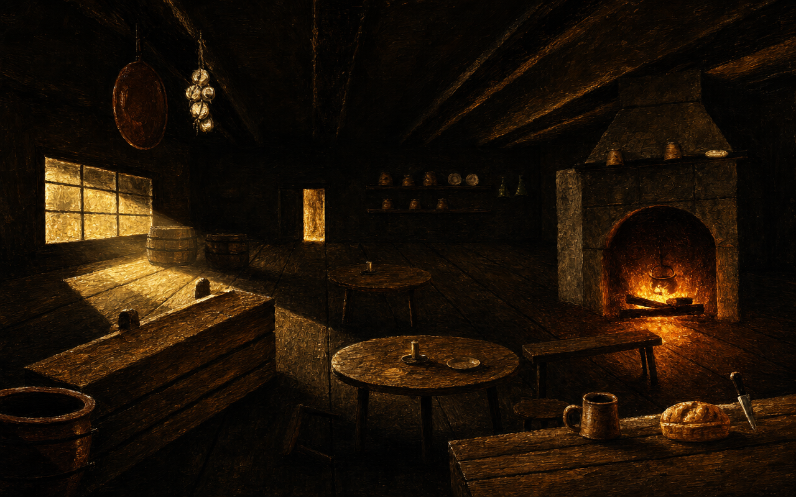
high · 109.7s
Fully repaint this exact scene as a finished illustration. Keep the composition, camera angle, perspective, the layout and silhouette of every element, and the lighting direction EXACTLY as in the reference image. Ground-level view. Fill the entire frame edge to edge: no borders, no frames, no letterboxing, no vignettes. No people, no animals with human poses, no text, no watermark. Art style: Caravaggio — Baroque tenebrism, near-black shadows swallowing the room, one dramatic raking light and the fire as the only warm source, oil on canvas with rich impasto highlights, hyper-real textures on wood and clay, theatrical chiaroscuro.
base
04_bosque_carta_magic.png

high · 138.3s
Fully repaint this exact scene as a finished illustration. Keep the composition, camera angle, perspective, the layout and silhouette of every element, and the lighting direction EXACTLY as in the reference image. Ground-level view. Fill the entire frame edge to edge: no borders, no frames, no letterboxing, no vignettes. No people, no animals with human poses, no text, no watermark. Art style: Magic: The Gathering card illustration — polished digital fantasy painting, saturated jewel tones, dramatic magical light rays, painterly but detailed rendering, the lush epic look of a Forest basic land artwork.
base
05_puerto_impresionista.png
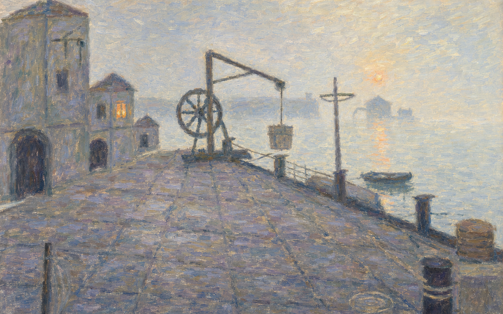
high · 145.3s
Fully repaint this exact scene as a finished illustration. Keep the composition, camera angle, perspective, the layout and silhouette of every element, and the lighting direction EXACTLY as in the reference image. Ground-level view. Fill the entire frame edge to edge: no borders, no frames, no letterboxing, no vignettes. No people, no animals with human poses, no text, no watermark. Art style: French Impressionist painting in the manner of Monet's Impression soleil levant — broken visible brushstrokes, color vibration instead of outlines, misty atmosphere dissolving the far bank, soft complementary greys with a single warm accent, oil sketch spontaneity.
base
06_puerta_dore_coloreado.png
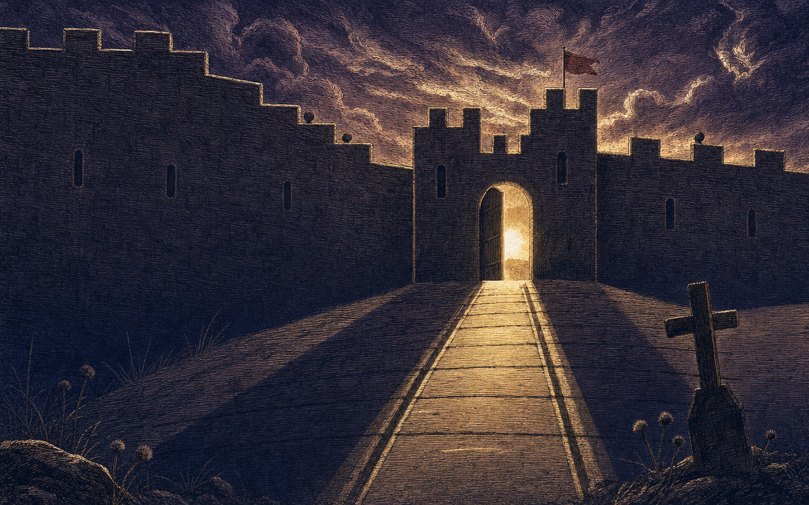
high · 98.3s
Fully repaint this exact scene as a finished illustration. Keep the composition, camera angle, perspective, the layout and silhouette of every element, and the lighting direction EXACTLY as in the reference image. Ground-level view. Fill the entire frame edge to edge: no borders, no frames, no letterboxing, no vignettes. No people, no animals with human poses, no text, no watermark. Art style: Gustave Doré engraving, hand-colored — dense parallel hatching and cross-hatching building the volumes, dramatic biblical light bursting through the gate, apocalyptic clouds, a restrained tinted-print palette of warm ambers and cold violets over the monochrome engraving.
base
01_calle_magic.png

high · 124.5s
Fully repaint this exact scene as a finished illustration. Keep the composition, camera angle, perspective, the layout and silhouette of every element, and the lighting direction EXACTLY as in the reference image. Ground-level view. Fill the entire frame edge to edge: no borders, no frames, no letterboxing, no vignettes. No people, no animals with human poses, no text, no watermark. Art style: Magic: The Gathering card illustration — polished digital fantasy painting, saturated jewel tones, dramatic golden light, painterly but detailed rendering, epic cinematic mood.
base
02_plaza_magic.png

high · 119.1s
Fully repaint this exact scene as a finished illustration. Keep the composition, camera angle, perspective, the layout and silhouette of every element, and the lighting direction EXACTLY as in the reference image. Ground-level view. Fill the entire frame edge to edge: no borders, no frames, no letterboxing, no vignettes. No people, no animals with human poses, no text, no watermark. Art style: Magic: The Gathering card illustration — polished digital fantasy painting, saturated jewel tones, dramatic light, painterly but detailed rendering, epic cinematic mood.
base
03_taberna_magic.png

high · 113.7s
Fully repaint this exact scene as a finished illustration. Keep the composition, camera angle, perspective, the layout and silhouette of every element, and the lighting direction EXACTLY as in the reference image. Ground-level view. Fill the entire frame edge to edge: no borders, no frames, no letterboxing, no vignettes. No people, no animals with human poses, no text, no watermark. Art style: Magic: The Gathering card illustration — polished digital fantasy painting, saturated jewel tones, dramatic warm firelight, painterly but detailed rendering, epic cinematic mood.
base
05_puerto_magic.png

high · 126.2s
Fully repaint this exact scene as a finished illustration. Keep the composition, camera angle, perspective, the layout and silhouette of every element, and the lighting direction EXACTLY as in the reference image. Ground-level view. Fill the entire frame edge to edge: no borders, no frames, no letterboxing, no vignettes. No people, no animals with human poses, no text, no watermark. Art style: Magic: The Gathering card illustration — polished digital fantasy painting, saturated jewel tones, dramatic misty light, painterly but detailed rendering, epic cinematic mood.
base
06_puerta_magic.png

high · 130.2s
Fully repaint this exact scene as a finished illustration. Keep the composition, camera angle, perspective, the layout and silhouette of every element, and the lighting direction EXACTLY as in the reference image. Ground-level view. Fill the entire frame edge to edge: no borders, no frames, no letterboxing, no vignettes. No people, no animals with human poses, no text, no watermark. Art style: Magic: The Gathering card illustration — polished digital fantasy painting, saturated jewel tones, dramatic sunset backlight, painterly but detailed rendering, epic cinematic mood.